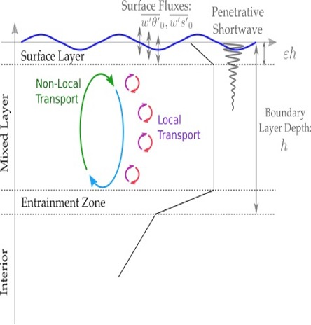

Upper-ocean mixing parameterization
New physically based closures, including hybrid mass-flux/high-order and plume-based non-local schemes, that capture mixing by convective plumes and Langmuir cells, which standard eddy-diffusivity schemes miss.